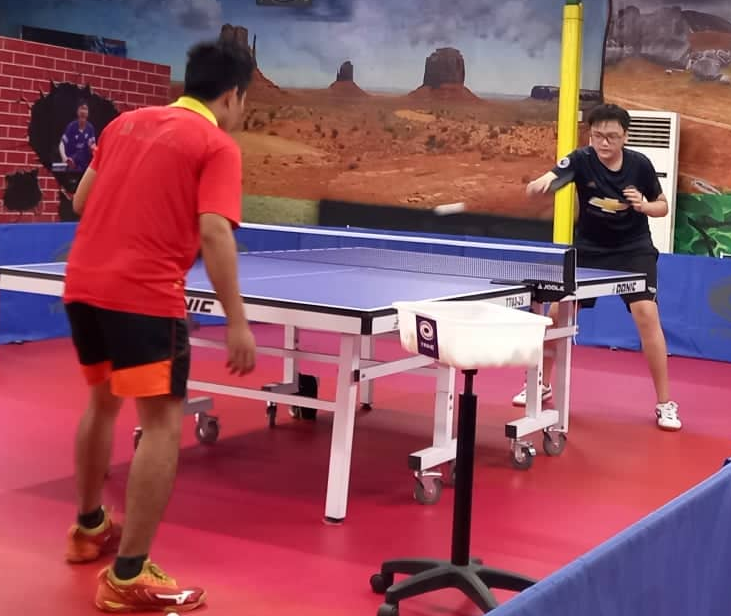
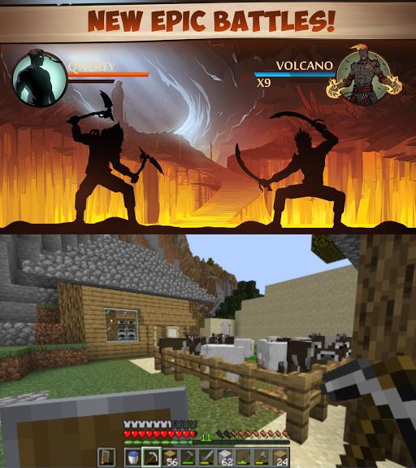

Ricing
Sounds mouth-watering, doesn't it? Actually "rice", as used in this context, means "Race Inspired Cosmetic Enhancement" or simply put, customization. For me, I love "ricing" my Linux desktop, where I tweak various GUI components - window manager, status bars, keyboard shortcuts - to my liking. Below are a few screenshots, with the configurations available here.
Table Tennis
I've never really been talented at sports, but among them, table tennis is the one I find most enjoyable. I used to play at our local club but because of the pandemic, I currently play at home with my dad, who often invites a few of his friends over. What I love about table tennis is that it does not require a team (I'm terrible at team sports), and has a fast-paced yet strategic playing style.
Gaming
Just like any other teenager, I find video games a refreshing, iresistible pastime to spend with my friends. As of now, I love playing both computer and mobile games at different times, depending on the condition. During long holidays, my friends and I play on a Minecraft server for hours, whereas on shorter breaks, I just whip up a quick Underworld Raid on Shadow Fight 2.
